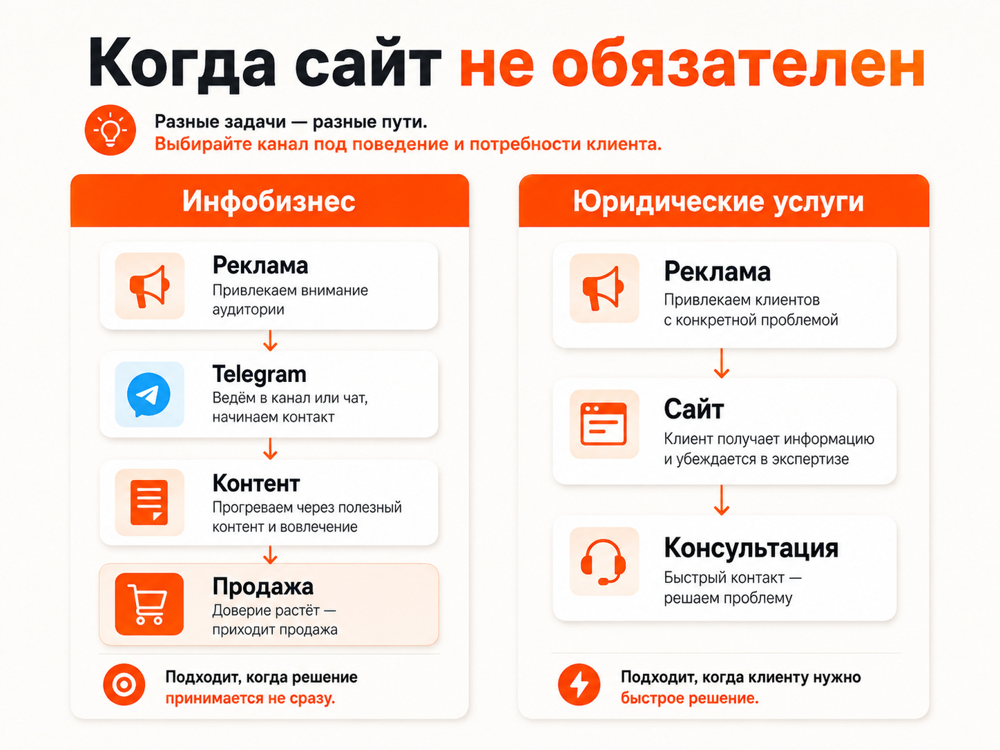
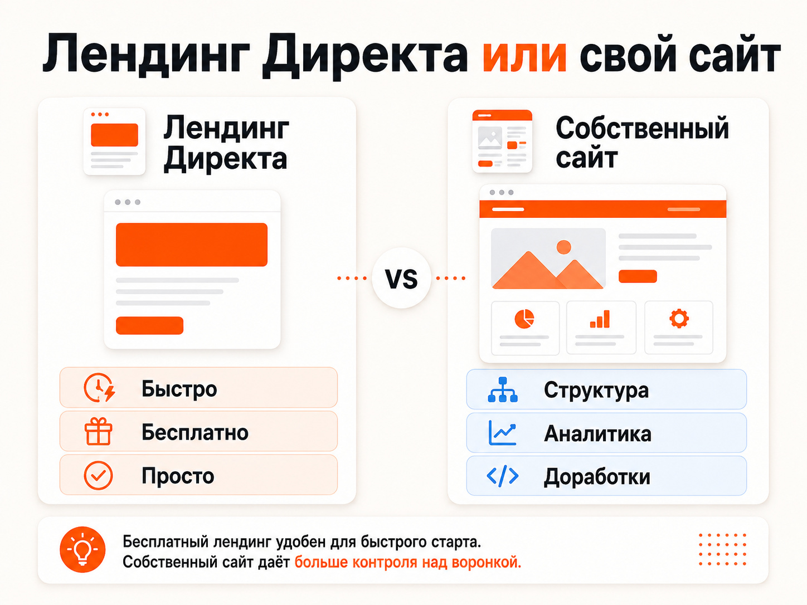

Блог о платном трафике
Яндекс Директ без сайта: можно ли запустить рекламу и когда это имеет смысл
Запустить Яндекс Директ без собственного сайта можно. Объявления необязательно должны вести на отдельный сайт компании: в некоторых случаях можно использовать телеграм-канал, страницу в социальной сети, профиль на другой площадке или бесплатный лендинг, созданный прямо внутри Директа.
Но возможность запустить рекламу без сайта не означает, что это хороший вариант для любого бизнеса.
Если человеку перед обращением нужно изучить услугу, сравнить варианты, посмотреть кейсы, цены, гарантии и информацию о компании, отсутствие нормального сайта может заметно ухудшить результат рекламы. А в некоторых нишах сайт действительно можно заменить другой площадкой.
Разберём, какие варианты сейчас доступны и когда ими имеет смысл пользоваться.
Можно ли запустить Яндекс Директ без сайта
Да. Сам Яндекс прямо предусматривает такой сценарий.
В Мастере кампаний можно выбрать продвижение бизнеса без сайта. Достаточно описать свой бизнес, после чего Директ поможет создать объявления и предложит сделать лендинг непосредственно внутри рекламного кабинета. Реклама может показываться как в поиске Яндекса, так и в Рекламной сети.
Кроме того, в качестве страницы перехода могут использоваться страницы социальных сетей, маркетплейсов и других внешних площадок.
Поэтому собственный сайт технически не является обязательным условием запуска рекламы.
Вопрос скорее в другом: куда будет попадать человек после клика и сможет ли эта страница нормально превратить рекламный трафик в заявку или продажу.
Куда можно вести рекламу, если своего сайта нет
На практике основных вариантов несколько.
Бесплатный лендинг внутри Яндекс Директа
Сейчас в Директе есть собственный конструктор одностраничных сайтов. Лендинг создаётся бесплатно и доступен клиентам из России. Его можно сделать на основе описания бизнеса или информации с существующего сайта.
Это уже не просто страница с одним заголовком и телефоном.
На лендинг можно добавить:
- описание товара или услуги;
- фотографии;
- телефон;
- Telegram, WhatsApp и MAX;
- форму заявки;
- каталог товаров или услуг с ценами;
- адрес компании;
- карту;
- рейтинг и отзывы из Яндекс Бизнеса.
Кроме того, на таком лендинге автоматически настраивается Яндекс Метрика и цели для основных действий: отправки формы, клика по номеру телефона, перехода в мессенджер и построения маршрута.
То есть для очень простого бизнеса такая страница уже действительно способна выполнять функции небольшого сайта.
Но возможности её всё равно ограничены по сравнению с нормальной посадочной страницей.
Вы не сможете так же свободно проектировать структуру, создавать сложные блоки, подробно раскрывать преимущества, строить разные страницы под сегменты аудитории, внедрять собственную аналитику и постоянно дорабатывать воронку.
Поэтому я бы рассматривал лендинг Директа прежде всего как упрощённый вариант, а не полноценную замену сайту.

Телеграм-канал
Для некоторых ниш собственный сайт вообще может быть не главным элементом воронки.
Хороший пример: образовательные проекты, эксперты, авторские продукты и другие направления, где перед покупкой человек долго знакомится с контентом.
Здесь вполне логична цепочка:
Реклама -> телеграм-канал -> контент -> прогрев -> продажа
У Директа существует отдельный тип кампании для привлечения подписчиков в Telegram. Система анализирует канал и его публикации, создаёт объявления и может отслеживать подписки через специального бота. После клика пользователь сначала видит промостраницу, а затем может перейти в канал.
Для инфобизнеса такая схема может быть совершенно нормальной.
Человек не обязательно готов покупать курс сразу после первого рекламного объявления. Ему можно показать экспертность, дать несколько полезных материалов и только после этого предложить продукт.
В такой модели отсутствие классического сайта само по себе проблемой не является.
Группа или страница во ВКонтакте
Аналогичным образом трафик можно направлять на страницу бизнеса в социальной сети. Директ допускает использование страницы соцсети в качестве страницы перехода.
Для небольшого локального бизнеса это иногда приемлемо.
Например, если во ВКонтакте уже есть:
- подробное описание услуг;
- фотографии работ;
- отзывы;
- цены;
- контакты;
- понятный способ оставить заявку.
Тогда дополнительный сайт может не быть обязательным на первом этапе.
Но здесь появляется другая проблема: вы зависите от структуры чужой площадки и значительно меньше контролируете поведение посетителя и аналитику.
Когда реклама в Директе без сайта имеет смысл
Первый сценарий, когда сама площадка является частью воронки.
Типичный пример: телеграм-канал эксперта. Цель рекламы здесь не получить заявку немедленно, а сначала привести человека в контент.
Второй сценарий, очень простой продукт или услуга.
Например, человеку достаточно увидеть цену, несколько фотографий, адрес и кнопку для звонка. Сложная посадочная страница для такого предложения иногда действительно не требуется.
Третий сценарий, небольшой бизнес с минимальным бюджетом на запуск.
Если выбор стоит между тем, чтобы вообще не запускать рекламу, и использованием бесплатного лендинга Директа, второй вариант может быть разумнее.
Но экономить на сайте имеет смысл только до тех пор, пока эта экономия не начинает увеличивать стоимость привлечения клиента.
Условно:
сайт стоит 100 000 ₽, но снижает стоимость клиента с 10 000 до 6 000 ₽.
При достаточном объёме рекламы экономия на разработке довольно быстро перестаёт быть экономией.
Четвёртый сценарий, резервная посадочная страница.
Лендинг Директа можно указать как резервный. Если основной сайт недоступен при определённых проблемах с интернет-соединением, пользователь сможет попасть на упрощённую страницу и всё равно оставить заявку.
Вот для этого сценария инструмент особенно полезен.

Когда запускать Яндекс Директ без сайта я бы не советовал
Главный плохой сценарий, это сложная услуга с высокой конкуренцией.
Представим юридическую компанию.
Человек вводит:
«юрист по банкротству физических лиц Москва»
После этого он видит десятки предложений.
Ему нужно понять:
- кто оказывает услугу;
- какой опыт у компании;
- сколько это стоит;
- что входит в работу;
- какие есть кейсы;
- какие специалисты работают в компании;
- какие гарантии вообще можно получить;
- почему обращаться нужно именно сюда.
Отправить такого человека просто в группу ВКонтакте или телеграм-канал обычно значительно сложнее, чем на хорошо подготовленную посадочную страницу под конкретную услугу.
Причём дело не в том, что социальные сети плохие.
Просто у человека здесь другое намерение.
Он не собирается несколько недель читать посты юриста. У него уже возникла проблема, и он ищет исполнителя прямо сейчас.
Та же логика часто работает в медицине, строительстве, B2B, недвижимости, дорогостоящих услугах и других направлениях, где решение требует доверия и большого количества информации.
Чем сложнее и дороже продукт, тем больше информации обычно должна дать посадочная страница до обращения.
Подойдёт ли бесплатный лендинг Директа для теста ниши
Технически да. Но результаты такого теста нужно интерпретировать очень осторожно.
Можно проверить, например:
- существует ли поисковый спрос;
- сколько примерно стоит трафик;
- реагируют ли пользователи на предложение;
- какие объявления получают клики.
Но нельзя сделать вывод:
«На лендинге Директа заявок нет, значит ниша не работает».
Проблемой может быть не ниша, а сама посадочная страница.
Это особенно важно в конкурентных направлениях.
Допустим, ваши конкуренты отправляют пользователя на полноценные сайты с кейсами, отзывами, видео, примерами работ, калькуляторами и подробным описанием услуги.
А вы показываете ему несколько автоматически собранных блоков и форму заявки.
Такой эксперимент проверяет не только спрос на продукт. Одновременно он проверяет конкурентоспособность очень упрощённой посадочной страницы.
Поэтому для серьёзного тестирования бизнеса я бы всё-таки использовал нормальный лендинг хотя бы под одну конкретную услугу.
Может ли лендинг Яндекса полностью заменить сайт
Для части небольших бизнесов, да.
Если для принятия решения человеку достаточно нескольких фотографий, стоимости услуги, отзывов и номера телефона, отдельный сайт действительно может не дать принципиального преимущества.
Но чем сложнее воронка, тем быстрее становятся заметны ограничения.
На собственном сайте можно создавать отдельные страницы под разные услуги и поисковые запросы, подробно работать с возражениями, менять структуру, проводить тесты, подключать собственную аналитику, CRM и дополнительные инструменты.
Бесплатный лендинг Директа прежде всего решает задачу:
«У меня нет сайта, но мне нужно куда-то привести рекламный трафик».
Он эту задачу выполняет.
Задачу создания максимально эффективной посадочной страницы под конкурентный рекламный трафик он автоматически не решает.

Что лучше выбрать
Я бы ориентировался на саму воронку продаж.
Если человеку нужно сначала подписаться и долго потреблять контент, можно вести рекламу непосредственно в Telegram.
Если у бизнеса уже есть хорошо оформленная страница во ВКонтакте и решение о покупке простое, иногда можно использовать её.
Если нужен максимально дешёвый старт без разработки, можно создать бесплатный лендинг непосредственно в Директе.
Но если услуга дорогая, конкурентная или требует подробного объяснения, нормальный сайт обычно является частью рекламной системы, а не дополнительной необязательной тратой.
Поэтому запуск Яндекс Директа без сайта вполне возможен. Использовать такую схему постоянно стоит только тогда, когда выбранная посадочная площадка действительно соответствует воронке продаж.
В остальных случаях отсутствие сайта позволяет сэкономить на разработке, но эта экономия впоследствии может вернуться более высокой стоимостью заявки.